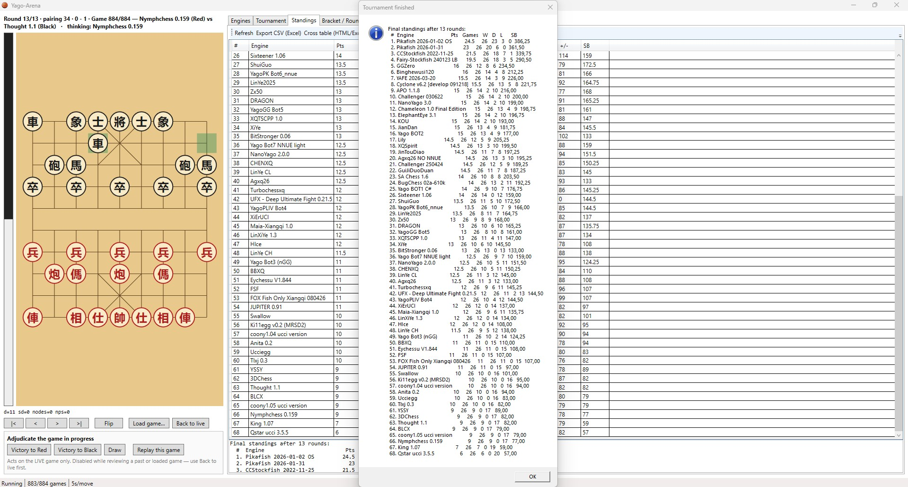
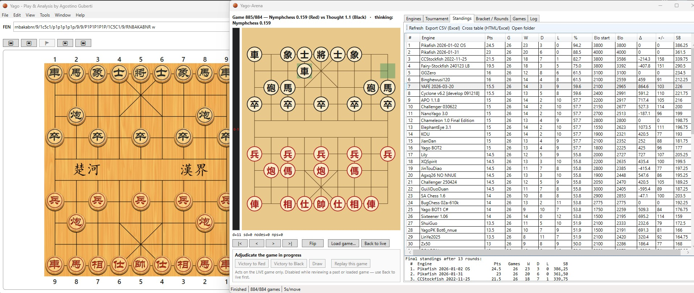

Concluso24–28 luglio 2026 · Sistema svizzero
Yago Arena Swiss 2026
Sessantotto engine si sono affrontati per tredici turni e 884 partite. Pikafish 2026-01-02 OS chiude al primo posto.
- 68 engine
- 13 turni
- 5s per mossa
Tornei engine · Xiangqi
L'archivio dei tornei tra motori di Xiangqi ospitati su Yago Arena e organizzati dalla Federazione Italiana Xiangqi.

Archivio tornei
Risultati completi, tabelloni incrociati e informazioni tecniche dei tornei disputati su Yago Xiangqi Arena.

Concluso24–28 luglio 2026 · Sistema svizzero
Sessantotto engine si sono affrontati per tredici turni e 884 partite. Pikafish 2026-01-02 OS chiude al primo posto.
Risultati ufficiali
Passa dalla classifica completa al tabellone incrociato. I dati sono esportati direttamente da Yago Arena.
Caricamento risultati…
Nota dell'organizzatore
Gli Elo iniziali, a parte quelli ufficiali di alcuni engine, sono stati assegnati in modo del tutto arbitrario dal sottoscritto.
Per una disattenzione, per oltre metà torneo non sono state applicate le regole che assegnano la sconfitta per scacco perpetuo o inseguimento perpetuo (perpetual chasing).
Tra pochi giorni inizierà un torneo a eliminazione diretta tra i migliori sedici engine classificati.
Alcuni motori UCCI, pur funzionando correttamente in Yago, non sono sempre riusciti a rispondere entro i cinque secondi concessi per ogni mossa e hanno quindi perso diverse partite per tempo. Il loro Elo ricalcolato ne ha risentito.
È stato escluso il motore PX0, poiché funziona soltanto su computer dotati di scheda grafica NVIDIA. Sono stati esclusi anche EleEye105, Mars, HaQi D1-8a, HAQIKI D1-3 e Fairy-Max (MaxQi).
Alcuni motori hanno subito crash o prodotto mosse illegali durante partite molto lunghe e hanno pertanto perso la partita. Nessuno dei primi sedici classificati ha manifestato questi problemi.
In questo torneo non è stata utilizzata alcuna libreria di aperture comune: in apertura, ogni motore ha quindi impiegato le proprie risorse. In futuro verrà organizzato un torneo con una libreria di aperture comune.
Non è stato impostato un numero uniforme di thread o core: ogni engine ha giocato con le impostazioni di avvio definite dal proprio sviluppatore.
Collezione didattica
I trenta engine creati o adattati da Agostino Guberti che hanno preso parte al torneo.
30 motori
| Engine | Linguaggio | NNUE | Opening book | Elo iniziale | Anno |
|---|---|---|---|---|---|
| YAFE | C++ | Sì | No | 2900 | 2022 |
| NANO_YAGO3 | C++ | No | Sì | 2400 | 2026 |
| JianDan 简单 | C++ | No | Sì | 2200 | 2018 |
| YAGO_Bot2 | C++ | No | Sì | 2100 | 2023 |
| GuiJiDuoDuan 鬼计多端 | C++ | No | Sì | 2050 | 2007 |
| JinTouDiao 金头鲷 | C++ | No | Sì | 2050 | 2020 |
| AGXQ26_PRE_NNUE | C++ | No | Sì | 2050 | 2018 |
| LinYe_2025_CH 林野 | C++ | No | Sì | 1950 | 2004 |
| YAGO_Bot1 | C# | No | Sì | 1950 | 2021 |
| ZX50 | C++ | No | Sì | 1900 | 1998 |
| Dragon 龙 | C++ | No | Sì | 1900 | 2009 |
| TSCPXQ | C++ | No | Sì | 1900 | 1997 |
| ShuiGuo 水果 | C++ | No | Sì | 1900 | 2015 |
| YAGO_Bot5 | C++ | No | Sì | 1900 | 2026 |
| YAGO_Bot6 | C++ | Sì | Sì | 1900 | 2026 |
| LinYe 1.0_CL | C++ | No | Sì | 1850 | 2000 |
| CHENXQ 搷象棋 | C++ | No | Sì | 1850 | 1993 |
| NANO_YAGO2 | C++ | No | Sì | 1850 | 2025 |
| YAGO_Bot7 | C++ | Sì | No | 1850 | 2026 |
| XiYe 西野 | C++ | No | Sì | 1800 | 1999 |
| AGXQ26 | C++ | Sì | No | 1800 | 2021 |
| MAIA-Xiangqi | C++ | BIN | Sì | 1750 | 2020 |
| XiEr 儿 西 | C++ | No | No | 1750 | 2002 |
| LinXiYe 1.3 林西野 | C++ | No | Sì | 1750 | 2000 |
| TURBOXQ 喘振象棋 | C++ | No | Sì | 1750 | 1985 |
| YAGO_Bot4 | C++ | No | Sì | 1750 | 2025 |
| LinYe 1.1_CH | C++ | No | Sì | 1450 | 1991 |
| FSF 仙子鱼 | C++ | No | No | 1350 | 2008 |
| FOX 狐狸 | C++ | Sì | No | 1350 | 2024 |
| YAGO_Bot3 | C++ | No | Sì | 1350 | 2024 |
Nessun motore corrisponde alla ricerca.
BIN Rete neurale distribuita come file binario.
Gli Elo riportati sono quelli iniziali del torneo.
Federazione Italiana Xiangqi
Segui la FIX per video, aggiornamenti, risorse e attività dedicate allo Xiangqi in Italia.